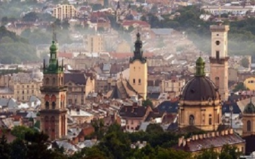
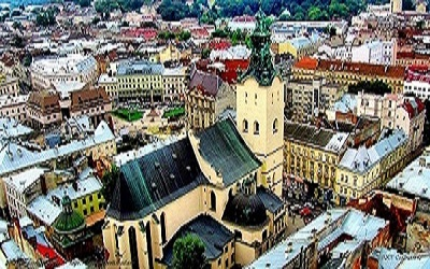
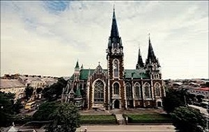

Місто з душею лева
Місто Лева, Леополіс, Лемберг, Львів ... Його вузенькі, сповнені подихом історії вулички, схожі на чудернацькі павутиння. Єдине місто України , що не зазнало значних спустошень та руйнувань на початку двадцятого століття і прославилося завдяки своєму суто європейському стилю

Львів- місто легенд. Тут кожен дворик, кожен будинок та кожна вулиця дихають власними, неповторними легендами, які тягнуться ще з часів Середньовіччя

